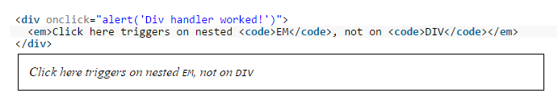
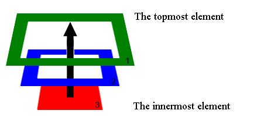

Дуже часто при написанні сторінок ми використовуємо влкадення одних тегів в інші. Час від часу ми додаємо різні події для цих елементів. В JavaScript є таке поняття як Bubbling (вспливання). Його зміст полягає в наступному: якщо ми вішаємо обробник подій на батьківському елементі, аналогічні події будуть фіксуватися і для всіх його дочірніх елементів.
Наприклад у наведеному коді клік по будь-якому елементу всередині контейнера призведе до появи "алерту" з відповідним текстом.
"Вспливання" починається з найглибшого дочірнього елемента і поширюється до найвищого (батьківського) елемента по порядку вкладеності.
Метод "stopPropagation()" використовується для того щоб виконати подію для дочірнього елемента, але зупинити "вспливання" цієї події до всіх інших його батьківських елементів.
1. Приклад без викоритсання "stopPropagation()". При кліку на будь-який з елементів контейнера виконується "алерт", блок на якому відбувся клік змінює колір на жовтий та показує текст "Target", а його батьківські елементи (якщо такі є) змінюють колір на оранжевий.
В цьому випадку "вспливанню" нічого не перешкоджає
2. Приклад з викоритсанням "stopPropagation()". При кліку на будь-який з елементів контейнера виконується "алерт", блонк на якому відбувся клік змінює колір на жовтий та показує текст "Target", але всі його батьківські елементи (якщо такі є) вже не змінюють колір. З ними нічого не відбувається
В цьому випадку "вспливання" зупиняється на першому ж елементі.
В JavaScript багато подій викликають за собою певні (дефолтні) дії браузера. Часто коли нам потрібно на такі події поставити власні функції, ці дефолтні дії нам заважають. Метод "preventDefault()" використовується для того щоб відімкнути такі дії. Коли ці дії відімкнені ми можемо писати свою функцію
Список дій які є дефолтними:
Нижче наведений приклад з подією contextmenu, яка викликає контексне меню при натисненніна елементі правої кнопки мишки. В даному прикладі контексне меню при натисненні не буде з'являтися. Натомість викликається функція, яка викликає появу "алерта" в якому зазначений колір елемента та rgb цього кольору, на якому була викликана подія.